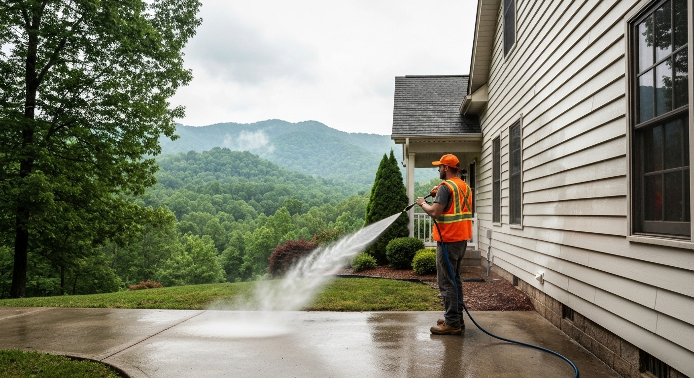

Pressure Washing in Sevierville — Fresh Exterior, Same Day
Serving Sevierville, Sevier County & surrounding East Tennessee · We call back within 1 hour

Green Siding, Grimy Driveway, Dingy Deck?
Sevierville sits at the gateway to the Great Smoky Mountains, and properties here deal with some of the most aggressive exterior grime conditions in East Tennessee. The mountain humidity is higher than Knoxville, the hardwood canopy is dense, and vacation rental properties accumulate grime from constant high traffic — decks, walkways, driveways, and siding that owner-occupied homes might wash once a year often need attention every season.
If your home's exterior has been looking worse every spring, you're not imagining it. Algae, mildew, and general grime are cumulative — a little each season until the house looks like it's been neglected for years, even when it hasn't been. The fix is faster and cheaper than most homeowners expect. A professional pressure wash typically takes 2–4 hours. The before-and-after is usually dramatic enough that neighbors notice.
What That Buildup Is Actually Doing
It's not just an appearance problem:
- Algae on siding and wood is acidic. It holds moisture and accelerates surface breakdown, shortening the life of paint and contributing to wood rot on trim and lap siding.
- Green concrete and pavers are slipping hazards. Wet algae on shaded driveways and pool decks creates a genuinely dangerous surface, especially for kids and older family members.
- Pre-paint prep requires a clean surface. No reputable painter starts on dirty siding. The wash is a required step before any exterior paint job — not optional.
- Curb appeal before a sale matters. A clean exterior reads as a maintained home. Grime and algae raise questions in buyers' minds before they ever step inside.
The biological growth that builds up in East Tennessee's climate doesn't stop on its own — it just gets thicker every season you wait.
What We Do and How Long It Takes
Assess. We walk the property and note surface types — vinyl, wood, composite, concrete, brick. We quote on the spot with a written fixed price.
Pre-treat. Algae and mildew respond to biodegradable detergent application before water hits the surface. This does the biological work so we don't need high pressure that would damage the surface.
Wash. Calibrated technique by surface type: higher pressure on concrete with rotating surface cleaner, soft wash on siding and wood, correct nozzle angle to prevent water infiltration behind panels.
Walk it with you. We inspect before leaving. You get the result you expected — or we make it right.
Most full-property jobs are done in 2–4 hours.
What Homeowners Say About the Results
"Run a vacation cabin near Sevierville. The deck and exterior get rough fast with constant guests. Knox Pressure Pros handles the annual wash and it always comes out looking great."
"Primary home near the Smokies. The humidity and trees make a mess of the siding every year. Annual wash makes all the difference. Professional, punctual, and fair-priced."
What Pressure Washing Costs Here
Straightforward pricing — we quote by job, not by hour:
| Service | Price Range |
|---|---|
| House exterior washing | $250–$550 |
| Driveway & walkways | $100–$225 |
| Deck or patio | $150–$375 |
| Roof soft wash | $300–$600 |
| Full property package | $400–$850 |
You know the price before we start. The estimate is free.
Quick Answers Before You Call
Will pressure washing damage my siding or deck?
Only if you use the wrong technique — which is what we don't do. We use soft wash methods on all delicate surfaces (siding, wood, roofs) and calibrated pressure on concrete and brick. Every surface gets the appropriate method, not the fastest one.
Do I need to be home?
No. Just leave us access to an outdoor water spigot. Most customers head to work and come home to a clean property. We'll note anything worth flagging before we leave.
How often should I have this done?
Sevierville properties typically need annual washing at minimum. Vacation rentals with high foot traffic and properties near wooded Smoky Mountain terrain often benefit from more frequent cleaning — every 6–8 months.
Do you work in Sevierville?
Yes — we serve Sevierville and surrounding Sevier County. Most jobs scheduled within 3–5 business days. Call (865) 378-8377.
Book Before Spring Fills Up
Spring books fast. If you're getting ready to sell, paint, or just want the house looking its best — get on the calendar now. (865) 378-8377 — we answer or call back within 1 hour.